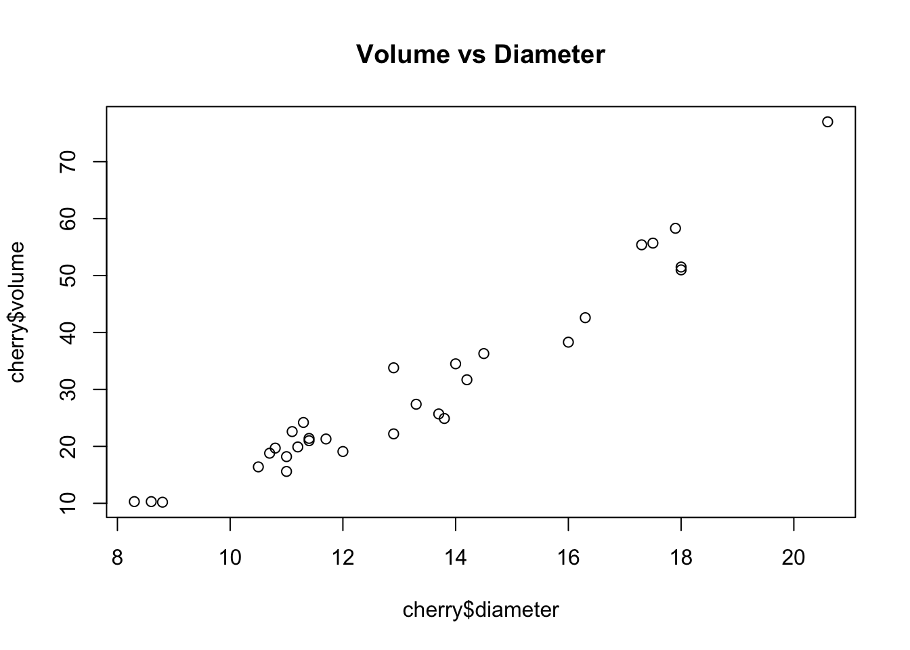
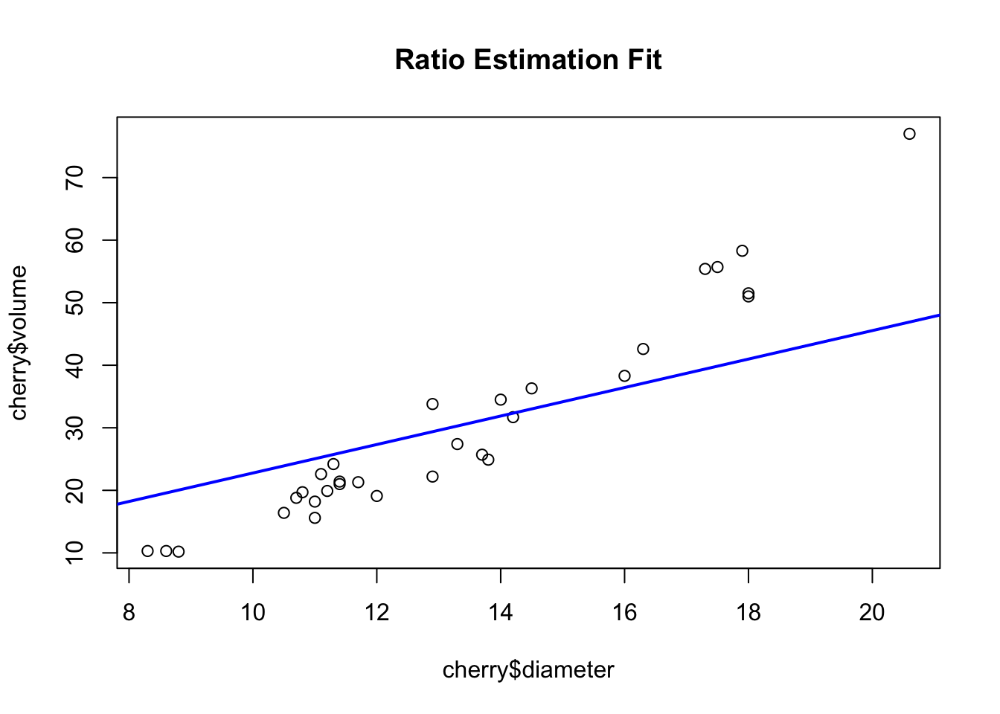
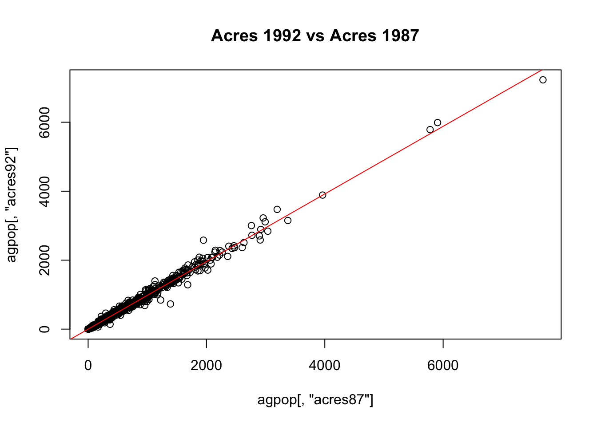
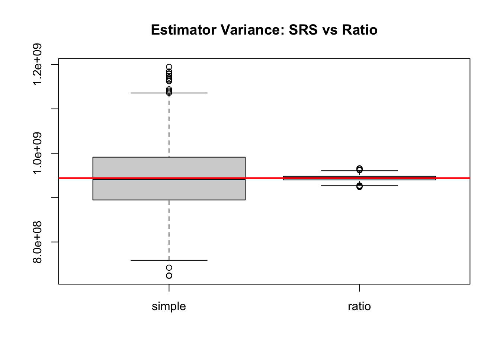

Code
cherry <- read.csv("data/cherry.csv", header = T)
head(cherry) |> gt()| diameter | height | volume |
|---|---|---|
| 8.3 | 70 | 10.3 |
| 8.6 | 65 | 10.3 |
| 8.8 | 63 | 10.2 |
| 10.5 | 72 | 16.4 |
| 10.7 | 81 | 18.8 |
| 10.8 | 83 | 19.7 |
When auxiliary information (a variable \(x\)) is highly correlated with our target variable of interest (\(y\)), we can use Ratio or Regression estimation to improve precision without increasing the sample size. We can also use auxiliary population structures to adjust our estimates after the fact via Post-stratification, or estimate means for specific sub-populations (Domains).
If the relationship between \(y\) and \(x\) passes through the origin, we estimate the ratio \(B\) and use it to adjust the mean:
Ratio: \(\hat{B} = \frac{\overline{y}}{\overline{x}}\)
Mean Estimator: \(\overline{y}_r = \hat{B} \overline{x}_{\text{U}}\) (where \(\overline{x}_{\text{U}}\) is the true population mean of \(x\))
Estimated Variance: \(\hat{V}(\overline{y}_r) = \left(\frac{\overline{x}_{\text{U}}}{\overline{x}}\right)^2 \left(1 - \frac{n}{N}\right) \frac{s_e^2}{n}\), where \(s_e^2\) is the sample variance of the residuals \(e_i = y_i - \hat{B}x_i\).
If the relationship does not pass through the origin, a linear regression is more appropriate:
To estimate the mean of a subgroup (domain \(d\)) when the domain sample size \(n_d\) is a random variable:
If we know the true population sizes (\(N_h\)) of strata, but we used a Simple Random Sample, we can post-stratify to reduce variance. We substitute \(n_h\) with expected proportional sample sizes:
We begin by loading the necessary libraries, including gt for formatting mathematical tables, and defining our custom functions for Ratio, Regression, Domain, and Post-stratified estimation. We also define a versatile gt helper to render our estimation outputs cleanly.
The estimating functions used throughout this book (including reg_est, ratio_est, domain_est, srs_est, and the format_est_gt table-formatting helper used below) live in a single shared file, samplingestimate.r, which we source below.
For post-stratification, we reuse the shared str_est() stratified estimator, but we plug in the expected sample sizes \(n_h = n \times \frac{N_h}{N}\) instead of the actual observed random \(n_h\).
samplingestimate.r)
# =============================================================
# Shared estimation functions for the Elements of Sampling Survey
# book. Source this file from any chapter that needs point/SE/CI
# estimators or their gt-table formatting helpers, e.g.:
#
# source("samplingestimate.r")
#
# =============================================================
suppressPackageStartupMessages({
library(gt)
})
# ---------------------------------------------------------
# Shared gt-table helpers
# ---------------------------------------------------------
## Formats a gt table column as ordinary fixed-point, UNLESS its values are
## too small (< `small` in absolute value) or too large (>= `large`), in
## which case it switches that column to scientific notation (rendered as
## "m x 10^n" via gt's exp_style = "x10n") instead.
fmt_auto <- function (gt_tbl, data, columns, decimals = 3, small = 1e-3, large = 1e5)
{
for (col in columns)
{
x <- data[[col]]
x <- x[is.finite (x) & x != 0]
if (length (x) == 0) next
if (any (abs (x) < small) || any (abs (x) >= large))
gt_tbl <- fmt_scientific (gt_tbl, columns = tidyselect::all_of (col), decimals = decimals, exp_style = "x10n")
else
gt_tbl <- fmt_number (gt_tbl, columns = tidyselect::all_of (col), decimals = decimals)
}
gt_tbl
}
## Formats a single scalar for inline formula display (fixed-point with
## thousands separators, switching to "m \times 10^{n}" LaTeX scientific
## notation for very small or very large magnitudes, mirroring fmt_auto()'s
## use of exp_style = "x10n") --- used to show worked-example steps such as
## \bar y = sum/n with the actual numbers plugged in.
fmt_num <- function (x, decimals = 3, small = 1e-3, large = 1e5)
{
use_sci <- is.finite (x) & x != 0 & (abs (x) < small | abs (x) >= large)
exps <- ifelse (x == 0, 0, floor (log10 (abs (x))))
mant <- ifelse (x == 0, 0, x / 10^exps)
ifelse (use_sci,
sprintf ("%s \\times 10^{%d}", formatC (mant, format = "f", digits = decimals), exps),
formatC (x, format = "f", digits = decimals, big.mark = ","))
}
## Truncates a row-level working data.frame whose LAST row is a summary row
## (e.g. "Sum"/"Total"): if there are more than head_n data rows (excluding
## that summary row), keeps only the first head_n data rows, inserts one
## "..." placeholder row, then the summary row --- so long working tables
## stay readable. id_col --- name of the row-label column.
truncate_working <- function (working, id_col, head_n = 6)
{
n <- nrow (working) - 1
if (n <= head_n + 1) return (working)
dots <- working[1, ]
dots[1, ] <- NA
dots[1, id_col] <- "..."
rbind (working[seq_len (head_n), ], dots, working[nrow (working), ])
}
# Helper function to format estimation outputs with appropriate mathematical headers
format_est_gt <- function(est_data, est_type = c("mean", "total", "ratio", "reg_mean", "reg_total", "ratio_mean", "domain_mean")) {
est_type <- match.arg(est_type)
sym_map <- list(
"mean" = c(est = "$\\bar{y}$", se = "$\\mathrm{SE}(\\bar{y})$"),
"total" = c(est = "$\\hat{t}$", se = "$\\mathrm{SE}(\\hat{t})$"),
"ratio" = c(est = "$\\hat{B}$", se = "$\\mathrm{SE}(\\hat{B})$"),
"reg_mean" = c(est = "$\\bar{y}_{reg}$", se = "$\\mathrm{SE}(\\bar{y}_{reg})$"),
"reg_total" = c(est = "$\\hat{t}_{reg}$", se = "$\\mathrm{SE}(\\hat{t}_{reg})$"),
"ratio_mean" = c(est = "$\\bar{y}_{r}$", se = "$\\mathrm{SE}(\\bar{y}_{r})$"),
"domain_mean" = c(est = "$\\bar{y}_{d}$", se = "$\\mathrm{SE}(\\bar{y}_{d})$")
)
est_sym <- sym_map[[est_type]]["est"]
se_sym <- sym_map[[est_type]]["se"]
# Convert to data frame. Use unname() to strip hidden lm() coefficient names
if (is.vector(est_data) && !is.list(est_data)) {
df <- as.data.frame(t(unname(est_data)))
} else {
df <- as.data.frame(est_data)
}
# Force standard column names so gt() never gets confused
colnames(df) <- c("Est.", "S.E.", "ci.low", "ci.upp")
# Check if we should use rownames as a stub
use_stub <- !is.null(rownames(df)) && !all(rownames(df) == as.character(1:nrow(df)))
df |>
gt(rownames_to_stub = use_stub) |>
cols_label(
Est. = md(est_sym),
S.E. = md(se_sym),
ci.low = md("95% CI Lower"),
ci.upp = md("95% CI Upper")
) |>
fmt_number(
columns = everything(),
decimals = 4
) |>
tab_options(table.width = pct(70))
}
## Formats an lm object as two gt tables, replacing the plain-text
## summary(lmfit) output:
## $coef --- coefficient table (Estimate, S.E., t value, p value)
## $fit --- one-row table of model fit statistics, including R^2
## returns list($coef, $fit)
format_lm_gt <- function (lmfit)
{
s <- summary (lmfit)
coef_df <- as.data.frame (s$coefficients)
colnames (coef_df) <- c ("Estimate", "S.E.", "t value", "p value")
coef_gt <- coef_df |>
gt (rownames_to_stub = TRUE) |>
fmt_number (columns = c ("Estimate", "S.E.", "t value"), decimals = 4) |>
fmt_number (columns = "p value", decimals = 4) |>
tab_header (title = "Coefficient Estimates") |>
tab_options (table.width = pct(70))
fstat <- s$fstatistic
fit_df <- data.frame (
R.squared = s$r.squared,
Adj.R.squared = s$adj.r.squared,
Sigma = s$sigma,
F.statistic = unname (fstat["value"]),
p.value = unname (pf (fstat["value"], fstat["numdf"], fstat["dendf"], lower.tail = FALSE))
)
fit_gt <- fit_df |>
gt () |>
cols_label (
R.squared = md ("$R^2$"),
Adj.R.squared = md ("Adj. $R^2$"),
Sigma = md ("$\\hat\\sigma$"),
F.statistic = "F-statistic",
p.value = "p-value"
) |>
fmt_number (columns = everything (), decimals = 4) |>
tab_header (title = "Model Fit Summary") |>
tab_options (table.width = pct(70))
list (coef = coef_gt, fit = fit_gt)
}
# ---------------------------------------------------------
# Base Estimators
# ---------------------------------------------------------
## sdata --- a vector of original survey data
## N --- population size
## estimate --- "mean" (default) returns the population MEAN estimate;
## "total" returns the population TOTAL estimate (N * mean,
## with SE/CI scaled accordingly); requires finite N
## show.details --- if TRUE (default), also return a gt table of the
## row-level working values y_i, the fitted value \hat y_i
## (constant, and equal to \bar y under the SRS model),
## e_i = y_i-\hat y_i, and e_i^2, with a Sum row and a
## footnote showing s_y^2; NULL otherwise
## col_labels --- named list (y, yhat, dev); a partial list fills in the
## remaining defaults, so callers can override just one label
## returns list ($estimate = c(Est., S.E., ci.low, ci.upp), $table)
srs_est <- function (sdata, N = Inf, estimate = c ("mean", "total"),
show.details = TRUE, col_labels = list (y = "y_i", yhat = "\\hat y_i", dev = "e_i"))
{
estimate <- match.arg (estimate)
col_labels <- modifyList (list (y = "y_i", yhat = "\\hat y_i", dev = "e_i"), col_labels)
n <- length (sdata)
ybar <- mean (sdata)
dev <- sdata - ybar
s2y <- sum (dev^2) / (n - 1)
se.ybar <- sqrt((1 - n / N)) * sd (sdata) / sqrt(n)
if (estimate == "total")
{
if (!is.finite (N))
stop ("N must be finite to compute estimate = \"total\"")
est <- N * ybar
se.est <- N * se.ybar
}
else
{
est <- ybar
se.est <- se.ybar
}
mem <- qt (0.975, df = n - 1) * se.est
estimate_vec <- c (Est. = est, S.E. = se.est, ci.low = est - mem, ci.upp = est + mem)
if (!show.details)
return (list (estimate = estimate_vec, table = NULL))
working <- data.frame (
i = c (seq_len (n), "Sum"),
y = c (sdata, sum (sdata)),
yhat = rep (ybar, n + 1),
dev = c (dev, sum (dev)),
dev2 = c (dev^2, sum (dev^2))
)
working <- truncate_working (working, id_col = "i")
table <- gt (working) |>
tab_header (title = "SRS Mean Estimation: Working Table", subtitle = md (sprintf ("$n = %d$", n))) |>
cols_label (
i = md ("$i$"),
y = md (sprintf ("$%s$", col_labels$y)),
yhat = md (sprintf ("$%s$", col_labels$yhat)),
dev = md (sprintf ("$%s$", col_labels$dev)),
dev2 = md (sprintf ("$(%s-%s)^2$", col_labels$y, col_labels$yhat))
) |>
cols_width (i ~ px (40), everything () ~ px (110)) |>
fmt_auto (data = working, columns = c ("y", "yhat", "dev", "dev2"), decimals = 3) |>
sub_missing (missing_text = "...") |>
tab_style (
style = cell_text (weight = "bold"),
locations = cells_body (rows = i == "Sum")
) |>
tab_footnote (
footnote = md (sprintf ("$%s = \\bar y$ for every unit under the SRS model; $s_y^2 = \\sum_i (%s-%s)^2/(n-1) = %.4f$.",
col_labels$yhat, col_labels$y, col_labels$yhat, s2y)),
locations = cells_column_labels (columns = dev2)
) |>
tab_source_note (
source_note = md (if (estimate == "total")
sprintf ("$\\hat t = N\\bar y = %s \\times %s = %s$",
fmt_num (N, 0), fmt_num (ybar), fmt_num (est))
else
sprintf ("$\\bar y = \\dfrac{\\sum_i %s}{n} = \\dfrac{%s}{%d} = %s$",
col_labels$y, fmt_num (sum (sdata)), n, fmt_num (ybar)))
) |>
tab_source_note (
source_note = md (if (estimate == "total")
sprintf ("$\\mathrm{SE}(\\hat t) = N \\times \\mathrm{SE}(\\bar y) = %s \\times %s = %s$",
fmt_num (N, 0), fmt_num (se.ybar), fmt_num (se.est))
else if (is.finite (N))
sprintf ("$\\mathrm{SE}(\\bar y) = \\sqrt{1-\\dfrac{n}{N}}\\,\\dfrac{s}{\\sqrt n} = \\sqrt{1-\\dfrac{%d}{%d}}\\,\\dfrac{%s}{\\sqrt{%d}} = %s$",
n, N, fmt_num (sqrt (s2y)), n, fmt_num (se.ybar))
else
sprintf ("$\\mathrm{SE}(\\bar y) = \\dfrac{s}{\\sqrt n} = \\dfrac{%s}{\\sqrt{%d}} = %s$",
fmt_num (sqrt (s2y)), n, fmt_num (se.ybar)))
)
list (estimate = estimate_vec, table = table)
}
## ydata --- observations of the variable of interest
## xdata --- observations of the auxiliary variable
## xbarU --- population mean of the auxiliary variable; required when
## estimate is "mean" or "total"; ignored when estimate = "model"
## N --- population size
## estimate --- "mean" (default) returns the ratio estimate of the
## population MEAN of y, Bhat*xbarU; "total" returns the ratio
## estimate of the population TOTAL of y (requires finite N);
## "model" returns the raw ratio coefficient Bhat = ybar/xbar
## itself (with its own SE)
## show.details --- if TRUE (default), also return a gt table of the
## row-level working values y_i, x_i, fitted yhat_i =
## Bhat*x_i, residual e_i, and e_i^2, with a Sum row and a
## footnote showing Bhat and s_e^2; NULL otherwise
## col_labels --- named list (y, x, yhat) of RAW latex for those
## working-table columns, so this function can be reused
## (e.g. by cluster_ratio(), upswr_ratio()) with
## context-appropriate labels
## extra_col --- optional list (label, values, formula) adding one extra
## RAW-latex-labelled column of per-unit `values` right before
## the y column of the working table (e.g. the within-cluster
## means $\bar y_i$ used by cluster_ratio() to build $\hat
## t_i = \bar y_i M_i$); `formula` (optional) is shown as a
## footnote on the y column documenting that relationship
## returns list ($estimate = c(Est., S.E., ci.low, ci.upp), $table)
ratio_est <- function (ydata, xdata, xbarU = NULL, N = Inf,
estimate = c ("mean", "total", "model"), show.details = TRUE,
col_labels = list (y = "y_i", x = "x_i", yhat = "\\hat y_i"),
extra_col = NULL, B_label = "\\hat B")
{
estimate <- match.arg (estimate)
n <- length (xdata)
xbar <- mean (xdata)
ybar <- mean (ydata)
B_hat <- ybar / xbar
yhat <- B_hat * xdata
e <- ydata - yhat
var_e <- sum (e^2) / (n - 1)
sd_B_hat <- sqrt ((1 - n/N) * var_e / n) / xbar
if (estimate == "model")
{
est <- B_hat
sd_est <- sd_B_hat
}
else
{
if (is.null (xbarU))
stop ("xbarU (population mean of x) is required when estimate is \"mean\" or \"total\"")
if (estimate == "total")
{
if (!is.finite (N))
stop ("N must be finite to compute estimate = \"total\"")
est <- B_hat * xbarU * N
sd_est <- sd_B_hat * xbarU * N
}
else
{
est <- B_hat * xbarU
sd_est <- sd_B_hat * xbarU
}
}
mem <- qt (0.975, df = n - 1) * sd_est
estimate_vec <- c (Est. = est, S.E. = sd_est, ci.low = est - mem, ci.upp = est + mem)
if (!show.details)
return (list (estimate = estimate_vec, table = NULL))
working_cols <- list (i = c (seq_len (n), "Sum"))
if (!is.null (extra_col))
working_cols$extra <- c (extra_col$values, NA)
working_cols$y <- c (ydata, sum (ydata))
working_cols$x <- c (xdata, sum (xdata))
working_cols$yhat <- c (yhat, sum (yhat))
working_cols$e <- c (e, sum (e))
working_cols$e2 <- c (e^2, sum (e^2))
working <- as.data.frame (working_cols, check.names = FALSE)
working <- truncate_working (working, id_col = "i")
fmt_cols <- c ("y", "x", "yhat", "e", "e2")
if (!is.null (extra_col)) fmt_cols <- c ("extra", fmt_cols)
label_args <- list (i = md ("$i$"))
if (!is.null (extra_col))
label_args$extra <- md (sprintf ("$%s$", extra_col$label))
label_args$y <- md (sprintf ("$%s$", col_labels$y))
label_args$x <- md (sprintf ("$%s$", col_labels$x))
label_args$yhat <- md (sprintf ("$%s$", col_labels$yhat))
label_args$e <- md ("$e_i$")
label_args$e2 <- md ("$e_i^2$")
table <- gt (working) |>
tab_header (title = "Ratio Estimation: Working Table", subtitle = md (sprintf ("$n = %d$", n)))
table <- do.call (cols_label, c (list (table), label_args))
table <- table |>
cols_width (i ~ px (40), everything () ~ px (100)) |>
fmt_auto (data = working, columns = fmt_cols, decimals = 3) |>
sub_missing (missing_text = "...") |>
tab_style (
style = cell_text (weight = "bold"),
locations = cells_body (rows = i == "Sum")
) |>
tab_footnote (
footnote = md (sprintf ("$\\hat B = \\sum_i %s / \\sum_i %s = %.4f$, $%s = \\hat B\\, %s$, $s_e^2 = %.4f$.",
col_labels$y, col_labels$x, B_hat, col_labels$yhat, col_labels$x, var_e)),
locations = cells_column_labels (columns = yhat)
)
if (!is.null (extra_col) && !is.null (extra_col$formula))
table <- table |>
tab_footnote (
footnote = md (sprintf ("$%s$.", extra_col$formula)),
locations = cells_column_labels (columns = y)
)
table <- table |>
tab_source_note (
source_note = md (if (estimate == "model")
sprintf ("$%s = \\dfrac{\\sum_i %s}{\\sum_i %s} = \\dfrac{%s}{%s} = %s$",
B_label, col_labels$y, col_labels$x, fmt_num (sum (ydata)), fmt_num (sum (xdata)), fmt_num (B_hat))
else if (estimate == "total")
sprintf ("$\\hat t = \\hat B\\,\\bar x_U\\,N = %s \\times %s \\times %s = %s$",
fmt_num (B_hat), fmt_num (xbarU), fmt_num (N, 0), fmt_num (est))
else
sprintf ("$\\bar y_r = \\hat B\\,\\bar x_U = %s \\times %s = %s$",
fmt_num (B_hat), fmt_num (xbarU), fmt_num (est)))
) |>
tab_source_note (
source_note = md (if (estimate == "model")
(if (is.finite (N))
sprintf ("$\\mathrm{SE}(%s) = \\dfrac{1}{\\bar x}\\sqrt{\\left(1-\\dfrac{n}{N}\\right)\\dfrac{s_e^2}{n}} = \\dfrac{1}{%s}\\sqrt{\\left(1-\\dfrac{%d}{%d}\\right)\\dfrac{%s}{%d}} = %s$",
B_label, fmt_num (xbar), n, N, fmt_num (var_e), n, fmt_num (sd_B_hat))
else
sprintf ("$\\mathrm{SE}(%s) = \\dfrac{1}{\\bar x}\\sqrt{\\dfrac{s_e^2}{n}} = \\dfrac{1}{%s}\\sqrt{\\dfrac{%s}{%d}} = %s$",
B_label, fmt_num (xbar), fmt_num (var_e), n, fmt_num (sd_B_hat)))
else if (estimate == "total")
sprintf ("$\\mathrm{SE}(\\hat t) = \\mathrm{SE}(\\hat B)\\,\\bar x_U\\,N = %s \\times %s \\times %s = %s$",
fmt_num (sd_B_hat), fmt_num (xbarU), fmt_num (N, 0), fmt_num (sd_est))
else
sprintf ("$\\mathrm{SE}(\\bar y_r) = \\mathrm{SE}(\\hat B)\\,\\bar x_U = %s \\times %s = %s$",
fmt_num (sd_B_hat), fmt_num (xbarU), fmt_num (sd_est)))
)
list (estimate = estimate_vec, table = table)
}
## ydata --- observations of the variable of interest
## xdata --- observations of the auxiliary variable
## xbarU --- population mean of the auxiliary variable; required when
## estimate is "mean" or "total"; ignored when estimate = "model"
## N --- population size
## estimate --- "mean" (default) returns the regression estimate of the
## population MEAN of y, Bhat0 + Bhat1*xbarU; "total" returns
## the regression estimate of the population TOTAL of y
## (requires finite N); "model" returns the raw fitted slope
## Bhat1 itself (with its own SE from the lm fit)
## show.details --- if TRUE (default), also return a gt table of the
## row-level working values y_i, x_i, fitted yhat_i, e_i,
## e_i^2, with a Sum row and a footnote showing Bhat0,
## Bhat1, and s_e^2; NULL otherwise
## returns list ($estimate = c(Est., S.E., ci.low, ci.upp), $table)
reg_est <- function (ydata, xdata, xbarU = NULL, N = Inf,
estimate = c ("mean", "total", "model"), show.details = TRUE)
{
estimate <- match.arg (estimate)
n <- length (ydata)
lmfit <- lm (ydata ~ xdata)
Bhat <- lmfit$coefficients
yhat <- lmfit$fitted.values
e <- lmfit$residuals
SSe <- sum (e^2) / (n - 2)
if (estimate == "model")
{
est <- unname (Bhat[2])
sd_est <- summary (lmfit)$coefficients[2, "Std. Error"]
}
else
{
if (is.null (xbarU))
stop ("xbarU (population mean of x) is required when estimate is \"mean\" or \"total\"")
yhat_reg <- unname (Bhat[1] + Bhat[2] * xbarU)
se_yhat_reg <- sqrt ((1-n/N) * SSe / n)
if (estimate == "total")
{
if (!is.finite (N))
stop ("N must be finite to compute estimate = \"total\"")
est <- yhat_reg * N
sd_est <- se_yhat_reg * N
}
else
{
est <- yhat_reg
sd_est <- se_yhat_reg
}
}
mem <- qt (0.975, df = n - 2) * sd_est
estimate_vec <- c (Est. = est, S.E. = sd_est, ci.low = est - mem, ci.upp = est + mem)
if (!show.details)
return (list (estimate = estimate_vec, table = NULL))
Sxx <- sum ((xdata - mean (xdata))^2)
Sxy <- sum ((xdata - mean (xdata)) * (ydata - mean (ydata)))
working <- data.frame (
i = c (seq_len (n), "Sum"),
y = c (ydata, sum (ydata)),
x = c (xdata, sum (xdata)),
yhat = c (yhat, sum (yhat)),
e = c (e, sum (e)),
e2 = c (e^2, sum (e^2))
)
working <- truncate_working (working, id_col = "i")
table <- gt (working) |>
tab_header (title = "Regression Estimation: Working Table", subtitle = md (sprintf ("$n = %d$", n))) |>
cols_label (
i = md ("$i$"),
y = md ("$y_i$"),
x = md ("$x_i$"),
yhat = md ("$\\hat y_i$"),
e = md ("$e_i$"),
e2 = md ("$e_i^2$")
) |>
cols_width (i ~ px (40), everything () ~ px (100)) |>
fmt_auto (data = working, columns = c ("y", "x", "yhat", "e", "e2"), decimals = 3) |>
sub_missing (missing_text = "...") |>
tab_style (
style = cell_text (weight = "bold"),
locations = cells_body (rows = i == "Sum")
) |>
tab_footnote (
footnote = md (sprintf ("$\\hat B_0 = %.4f$, $\\hat B_1 = %.4f$, $\\hat y_i = \\hat B_0 + \\hat B_1 x_i$, $s_e^2 = %.4f$.",
Bhat[1], Bhat[2], SSe)),
locations = cells_column_labels (columns = yhat)
) |>
tab_source_note (
source_note = md (if (estimate == "model")
sprintf ("$\\hat B_1 = \\dfrac{\\sum_i(x_i-\\bar x)(y_i-\\bar y)}{\\sum_i(x_i-\\bar x)^2} = \\dfrac{%s}{%s} = %s$",
fmt_num (Sxy), fmt_num (Sxx), fmt_num (unname (Bhat[2])))
else if (estimate == "total")
sprintf ("$\\hat t_{reg} = N\\bar y_{reg} = %s \\times %s = %s$",
fmt_num (N, 0), fmt_num (yhat_reg), fmt_num (est))
else
sprintf ("$\\bar y_{reg} = \\hat B_0+\\hat B_1\\bar x_U = %s + %s \\times %s = %s$",
fmt_num (Bhat[1]), fmt_num (Bhat[2]), fmt_num (xbarU), fmt_num (yhat_reg)))
) |>
tab_source_note (
source_note = md (if (estimate == "model")
sprintf ("$\\mathrm{SE}(\\hat B_1) = \\sqrt{\\dfrac{s_e^2}{\\sum_i(x_i-\\bar x)^2}} = \\sqrt{\\dfrac{%s}{%s}} = %s$",
fmt_num (SSe), fmt_num (Sxx), fmt_num (sd_est))
else if (estimate == "total")
sprintf ("$\\mathrm{SE}(\\hat t_{reg}) = N\\times\\mathrm{SE}(\\bar y_{reg}) = %s \\times %s = %s$",
fmt_num (N, 0), fmt_num (se_yhat_reg), fmt_num (sd_est))
else if (is.finite (N))
sprintf ("$\\mathrm{SE}(\\bar y_{reg}) = \\sqrt{\\left(1-\\dfrac{n}{N}\\right)\\dfrac{s_e^2}{n}} = \\sqrt{\\left(1-\\dfrac{%d}{%d}\\right)\\dfrac{%s}{%d}} = %s$",
n, N, fmt_num (SSe), n, fmt_num (se_yhat_reg))
else
sprintf ("$\\mathrm{SE}(\\bar y_{reg}) = \\sqrt{\\dfrac{s_e^2}{n}} = \\sqrt{\\dfrac{%s}{%d}} = %s$",
fmt_num (SSe), n, fmt_num (se_yhat_reg)))
)
list (estimate = estimate_vec, table = table)
}
## sdata --- a vector of original survey data in a domain
## N --- population size
## n --- total sample size (not the sample size in the domain)
## to find total, multiply domain size N_d to the estimate returned by this function
domain_est <- function (sdata, n, N = Inf)
{
n_d <- length (sdata)
ybar <- mean (sdata)
se.ybar <- sqrt((1 - n / N)) * sd (sdata) / sqrt(n_d)
mem <- qt (0.975, df = n_d - 1) * se.ybar
c (Est. = ybar, S.E. = se.ybar, ci.low = ybar - mem, ci.upp = ybar + mem)
}
# ---------------------------------------------------------
# Stratified Estimator
# ---------------------------------------------------------
## Given per-stratum summaries, compute the stratified (or post-stratified)
## mean or total.
## estimate --- "mean" (default) returns the stratified MEAN estimate;
## "total" returns the stratified TOTAL estimate
## show.details --- if TRUE (default), also return a gt table showing the
## stratum-by-stratum working, with a Total row
## for poststratification, use nh = n * Nh/N
## returns list ($estimate = c(Est., S.E., ci.low, ci.upp), $table)
str_est <- function (ybarh, sh, nh, Nh, estimate = c ("mean", "total"), show.details = TRUE)
{
estimate <- match.arg (estimate)
N <- sum (Nh)
Pi_h <- Nh / N
v_h <- (1 - nh / Nh) * Pi_h^2 * sh^2 / nh
ybar <- sum (ybarh * Pi_h)
seybar <- sqrt (sum (v_h))
if (estimate == "total")
{
est <- N * ybar
se.est <- N * seybar
}
else
{
est <- ybar
se.est <- seybar
}
mem <- 1.96 * se.est
estimate_vec <- c (Est. = est, S.E. = se.est, ci.low = est - mem, ci.upp = est + mem)
if (!show.details)
return (list (estimate = estimate_vec, table = NULL))
stratum <- names (Nh)
if (is.null (stratum)) stratum <- seq_along (Nh)
working <- data.frame (
Stratum = c (stratum, "Total"),
Nh = c (Nh, N),
nh = c (nh, sum (nh)),
Pi_h = c (Pi_h, sum (Pi_h)),
ybarh = c (ybarh, NA),
sh2 = c (sh^2, NA),
weighted_mean = c (Pi_h * ybarh, ybar),
v_h = c (v_h, seybar^2)
)
table <- gt (working) |>
tab_header (title = "Stratified Mean Estimation: Working Table") |>
cols_label (
Stratum = md ("Stratum"),
Nh = md ("$N_h$"),
nh = md ("$n_h$"),
Pi_h = md ("$\\pi_h$"),
ybarh = md ("$\\bar y_h$"),
sh2 = md ("$s_h^2$"),
weighted_mean = md ("$\\pi_h\\bar y_h$"),
v_h = md ("$v_h$")
) |>
cols_width (c (Nh, nh) ~ px (60), everything () ~ px (110)) |>
fmt_number (columns = c (Nh, nh), decimals = 0) |>
fmt_number (columns = Pi_h, decimals = 2) |>
fmt_auto (data = working, columns = c ("ybarh", "sh2", "weighted_mean", "v_h"), decimals = 2) |>
sub_missing (missing_text = "") |>
tab_style (
style = cell_text (weight = "bold"),
locations = cells_body (rows = Stratum == "Total")
) |>
tab_footnote (
footnote = md ("$\\pi_h = N_h/N$ is the stratum weight."),
locations = cells_column_labels (columns = Pi_h)
) |>
tab_footnote (
footnote = md ("$v_h = (1-n_h/N_h)\\,\\pi_h^2\\, s_h^2/n_h$ is stratum $h$'s contribution to $V(\\bar y_{str}) = \\sum_h v_h$."),
locations = cells_column_labels (columns = v_h)
) |>
tab_source_note (
source_note = md (if (estimate == "total")
sprintf ("$\\hat t_{str} = N\\bar y_{str} = %s \\times %s = %s$",
fmt_num (N, 0), fmt_num (ybar), fmt_num (est))
else
sprintf ("$\\bar y_{str} = \\sum_h \\pi_h\\bar y_h = %s$", fmt_num (ybar)))
) |>
tab_source_note (
source_note = md (if (estimate == "total")
sprintf ("$\\mathrm{SE}(\\hat t_{str}) = N \\times \\mathrm{SE}(\\bar y_{str}) = %s \\times %s = %s$",
fmt_num (N, 0), fmt_num (seybar), fmt_num (se.est))
else
sprintf ("$\\mathrm{SE}(\\bar y_{str}) = \\sqrt{\\sum_h v_h} = \\sqrt{%s} = %s$",
fmt_num (sum (v_h)), fmt_num (seybar)))
)
list (estimate = estimate_vec, table = table)
}
## this function finds statistical estimates given a dataset with sampling weight
# stratdata --- data.frame containing stratified sample
# y --- name of variable for which we want to estiamte population mean
# stratum --- name of variable that will be used as stratum variable
# weight --- name of variable indicating sampling weight
# note: from weights we can find Nh (see the code for formula)
# returns the same list ($estimate, $table) as str_est(), which
# this function calls after deriving ybarh/sh/nh/Nh from the raw data
str_est_data <- function (stratdata, y, stratum, weight, estimate = c ("mean", "total"), show.details = TRUE)
{
## compute stratum-wise data
sh <- tapply (stratdata[, y], stratdata[,stratum], sd)
ybarh <- tapply (stratdata[, y], stratdata[,stratum], mean)
## find population stratum size using sampling weight included in the data set
Nh <- tapply (stratdata[, weight], stratdata[,stratum], sum)
nh <- tapply (1:nrow(stratdata), stratdata[,stratum], length)
str_est (ybarh, sh, nh, Nh, estimate = estimate, show.details = show.details)
}
# ---------------------------------------------------------
# Cluster (ratio-to-size) Estimator
# ---------------------------------------------------------
## Cluster ratio estimation (one-stage if Mi = mi, i.e. every element in the
## sampled cluster is measured; two-stage/ratio-to-size if only mi < Mi
## elements are subsampled, so t_hat_i = Mi * ybari is an ESTIMATED total).
## data --- original data frame for holding data
## cname --- variable recording cluster (psu) identity
## csize --- variable recording cluster (psu) population size (not sample size)
## yvar --- variable of interest
## N --- total number of clusters (psus) in the population
## estimate --- "mean" (default) or "model" both return the raw ratio
## Bhat = sum(t_hat_i)/sum(Mi) --- for this ratio-to-size
## cluster estimator, that raw B IS the population MEAN per
## element, so the two coincide; "total" returns the
## population TOTAL of y, Bhat*Mtotal_U (requires Mtotal_U,
## the population total of the cluster-size variable)
## Mtotal_U --- population total of the cluster-size variable; required
## when estimate = "total"
## show.details --- if TRUE, also return a gt table of the cluster-level
## working values (t_hat_i, M_i, fitted, e_i, e_i^2), via
## ratio_est()'s own working table
## returns list ($estimate = c(Est., S.E., ci.low, ci.upp), $table)
cluster_ratio <- function (data, cname, csize, yvar, N = Inf,
estimate = c ("mean", "total", "model"),
show.details = TRUE, Mtotal_U = NULL)
{
estimate <- match.arg (estimate)
clust <- data[, cname]
ydata <- data[, yvar]
ybari <- tapply (ydata, clust, mean)
Mi <- tapply (data[, csize], clust, function (x) x[1])
## same as the cluster total if all Mi elements were measured (mi = Mi)
t_hat_cls <- ybari * Mi
ybar_col <- list (label = "\\bar y_i", values = ybari, formula = "\\hat t_i = \\bar y_i \\, M_i")
if (estimate == "total")
{
if (is.null (Mtotal_U))
stop ("Mtotal_U (population total of the cluster-size variable) is required when estimate = \"total\"")
ratio_est (t_hat_cls, Mi, xbarU = Mtotal_U, N = N, estimate = "mean", show.details = show.details,
col_labels = list (y = "\\hat t_i", x = "M_i", yhat = "\\hat B M_i"),
extra_col = ybar_col)
}
else
{
ratio_est (t_hat_cls, Mi, N = N, estimate = "model", show.details = show.details,
col_labels = list (y = "\\hat t_i", x = "M_i", yhat = "\\hat B M_i"),
extra_col = ybar_col, B_label = "\\bar y_r")
}
}
# ---------------------------------------------------------
# UPS Estimators
# ---------------------------------------------------------
## Total estimation for datasets collected with UPS with Replacement
## (psi-estimator / Hansen-Hurwitz).
## estimate --- "total" (default) is this function's whole purpose, computed
## as the SAMPLE MEAN of the expanded pseudo-values t_i/psi_i
## (a with-replacement HT-type property); "mean" instead
## divides that total by N (requires finite N)
upswr_total <- function (total, psi, N = Inf, estimate = c ("total", "mean"), show.details = TRUE)
{
estimate <- match.arg (estimate)
res <- srs_est (total/psi, N = N, estimate = "mean", show.details = show.details,
col_labels = list (y = "t_i/\\psi_i"))
if (estimate == "mean")
{
if (!is.finite (N)) stop ("N must be finite to compute estimate = \"mean\" (mean total per psu)")
res$estimate <- res$estimate / N
}
res
}
## Ratio estimation for datasets collected with UPS with Replacement.
## estimate --- "mean" (default) or "model" both return the raw ratio
## Bhat = sum(t_i/psi_i)/sum(M_i/psi_i) --- that raw B IS the
## population MEAN per element; "total" returns the population
## TOTAL of y, Bhat*Mtotal_U (requires Mtotal_U, the population
## total of the size variable)
upswr_ratio <- function (total, M, psi, N = Inf, estimate = c ("mean", "total", "model"),
show.details = TRUE, Mtotal_U = NULL)
{
estimate <- match.arg (estimate)
if (estimate == "total")
{
if (is.null (Mtotal_U))
stop ("Mtotal_U (population total of the size variable) is required when estimate = \"total\"")
ratio_est (total/psi, M/psi, xbarU = Mtotal_U, N = N, estimate = "mean", show.details = show.details,
col_labels = list (y = "t_i/\\psi_i", x = "M_i/\\psi_i", yhat = "\\hat B\\,M_i/\\psi_i"))
}
else
{
ratio_est (total/psi, M/psi, N = N, estimate = "model", show.details = show.details,
col_labels = list (y = "t_i/\\psi_i", x = "M_i/\\psi_i", yhat = "\\hat B\\,M_i/\\psi_i"))
}
}
## Cluster UPS with Replacement: aggregates to the cluster level (ybari, Mi,
## psi per sampled cluster), then delegates to upswr_ratio(), so the
## working table and estimate/total logic are shared with the base function.
## data --- data frame holding the sample
## sid --- variable recording cluster (psu) identity
## csize --- variable recording cluster (psu) population size
## cpsi --- variable recording the cluster's selection probability psi_i
## yvar --- variable of interest (element level)
## estimate, Mtotal_U --- see upswr_ratio()
cluster_upswr_ratio <- function (data, sid, csize, cpsi, yvar, N = Inf,
estimate = c ("mean", "total", "model"),
show.details = TRUE, Mtotal_U = NULL)
{
estimate <- match.arg (estimate)
clust <- data[, sid]
ydata <- data[, yvar]
ybari <- tapply (ydata, clust, mean)
Mi <- tapply (data[,csize], clust, function (x) x[1])
psi <- tapply (data[,cpsi], clust, function (x) x[1])
t_hat_cls <- ybari * Mi
upswr_ratio (t_hat_cls, Mi, psi, N = N, estimate = estimate,
show.details = show.details, Mtotal_U = Mtotal_U)
}
## Cluster UPS without Replacement: same idea as cluster_upswr_ratio(),
## but dividing by the cluster's inclusion probability pik instead of psi.
## data --- data frame holding the sample
## cname --- variable recording cluster identity
## csize --- variable recording cluster population size
## cpik --- variable recording the cluster's inclusion probability pi_k
## yvar --- variable of interest (element level)
cluster_upswo_ratio <- function (data, cname, csize, cpik, yvar, N = Inf,
estimate = c ("mean", "total", "model"),
show.details = TRUE, Mtotal_U = NULL)
{
estimate <- match.arg (estimate)
clust <- data[, cname]
ydata <- data[, yvar]
ybari <- tapply (ydata, clust, mean)
Mi <- tapply (data[,csize], clust, function (x) x[1])
pik <- tapply (data[,cpik], clust, function (x) x[1])
t_hat_cls <- ybari * Mi
if (estimate == "total")
{
if (is.null (Mtotal_U))
stop ("Mtotal_U (population total of the size variable) is required when estimate = \"total\"")
ratio_est (t_hat_cls/pik, Mi/pik, xbarU = Mtotal_U, N = N, estimate = "mean", show.details = show.details,
col_labels = list (y = "\\hat t_i/\\pi_i", x = "M_i/\\pi_i", yhat = "\\hat B\\,M_i/\\pi_i"))
}
else
{
ratio_est (t_hat_cls/pik, Mi/pik, N = N, estimate = "model", show.details = show.details,
col_labels = list (y = "\\hat t_i/\\pi_i", x = "M_i/\\pi_i", yhat = "\\hat B\\,M_i/\\pi_i"))
}
}We want to estimate the volume of wood in cherry trees using their diameter as an auxiliary variable.
First, let’s load the data and verify that a strong linear relationship passing near the origin exists between volume and diameter.
cherry <- read.csv("data/cherry.csv", header = T)
head(cherry) |> gt()| diameter | height | volume |
|---|---|---|
| 8.3 | 70 | 10.3 |
| 8.6 | 65 | 10.3 |
| 8.8 | 63 | 10.2 |
| 10.5 | 72 | 16.4 |
| 10.7 | 81 | 18.8 |
| 10.8 | 83 | 19.7 |
plot(cherry$volume ~ cherry$diameter, main = "Volume vs Diameter")
anova(lm(cherry$volume ~ 0 + cherry$diameter))Output Note: The plot and the linear model output (which forces a 0 intercept) confirm a very strong relationship, making this a prime candidate for Ratio estimation.
To establish a baseline, we first estimate the mean and total volume using standard Simple Random Sampling (ignoring the auxiliary variable).
N <- 2967
## estimating the mean of volume
res_srs_vol <- srs_est(cherry$volume, N = N, estimate = "mean", show.details = FALSE)
srs_mean_vol_raw <- res_srs_vol$estimate
srs_mean_vol_raw |> format_est_gt("mean")| \(\bar{y}\) | \(\mathrm{SE}(\bar{y})\) | 95% CI Lower | 95% CI Upper |
|---|---|---|---|
| 30.1710 | 2.9369 | 24.1731 | 36.1688 |
## estimating the total of volume
res_srs_total_vol <- srs_est(cherry$volume, N = N, estimate = "total", show.details = FALSE)
srs_total_vol_raw <- res_srs_total_vol$estimate
srs_total_vol_raw |> format_est_gt("total")| \(\hat{t}\) | \(\mathrm{SE}(\hat{t})\) | 95% CI Lower | 95% CI Upper |
|---|---|---|---|
| 89,517.2613 | 8,713.6652 | 71,721.5828 | 107,312.9398 |
Output Note: Under SRS, the standard error for the mean volume is 2.94.
We calculate the ratio \(\hat{B} = \overline{y}/\overline{x}\); the function’s $table shows the row-level working values \(x_i\), \(y_i\), fitted \(\hat{y}_i = \hat{B}x_i\), residuals \(e_i = y_i - \hat{y}_i\), and \(e_i^2\) (with a Sum row and a footnote giving \(\hat B\) and \(s_e^2\)), so we no longer need to build this table by hand.
ydata <- cherry$volume
xdata <- cherry$diameter
N <- 2967
res_ratio_model <- ratio_est(ydata, xdata, N = N, estimate = "model")
res_ratio_model$table| Ratio Estimation: Working Table | |||||
| \(n = 31\) | |||||
| \(i\) | \(y_i\) | \(x_i\) | \(\hat y_i\)1 | \(e_i\) | \(e_i^2\) |
|---|---|---|---|---|---|
| 1 | 10.300 | 8.300 | 18.902 | −8.602 | 73.992 |
| 2 | 10.300 | 8.600 | 19.585 | −9.285 | 86.212 |
| 3 | 10.200 | 8.800 | 20.041 | −9.841 | 96.836 |
| 4 | 16.400 | 10.500 | 23.912 | −7.512 | 56.430 |
| 5 | 18.800 | 10.700 | 24.367 | −5.567 | 30.996 |
| 6 | 19.700 | 10.800 | 24.595 | −4.895 | 23.963 |
| ... | ... | ... | ... | ... | ... |
| Sum | 935.300 | 410.700 | 935.300 | 3.553 × 10−14 | 2,821.586 |
| 1 \(\hat B = \sum_i y_i / \sum_i x_i = 2.2773\), \(\hat y_i = \hat B\, x_i\), \(s_e^2 = 94.0529\). | |||||
| \(\hat B = \dfrac{\sum_i y_i}{\sum_i x_i} = \dfrac{935.300}{410.700} = 2.277\) | |||||
| \(\mathrm{SE}(\hat B) = \dfrac{1}{\bar x}\sqrt{\left(1-\dfrac{n}{N}\right)\dfrac{s_e^2}{n}} = \dfrac{1}{13.248}\sqrt{\left(1-\dfrac{31}{2967}\right)\dfrac{94.053}{31}} = 0.131\) | |||||
plot(cherry$volume ~ cherry$diameter, main="Ratio Estimation Fit")
abline(a = 0, b = res_ratio_model$estimate["Est."], col="blue", lwd=2)
Output Note: The blue line represents our estimated ratio \(\hat{B} \approx 2.28\). The working table above shows the individual residuals used to estimate \(s_e^2\).
B_v2d <- res_ratio_model$estimate
B_v2d |> format_est_gt("ratio")| \(\hat{B}\) | \(\mathrm{SE}(\hat{B})\) | 95% CI Lower | 95% CI Upper |
|---|---|---|---|
| 2.2773 | 0.1308 | 2.0102 | 2.5444 |
Output Note: The ratio \(\hat{B}\) is estimated at 2.277 with a standard error of 0.1308.
If we know the true total of the population diameters is 41,835, we can derive the population mean diameter \(\overline{x}_{\text{U}}\) and pass it as xbarU with estimate = "mean".
mean_diameters <- 41835 / N
res_ratio_mean <- ratio_est(ydata, xdata, xbarU = mean_diameters, N = N, estimate = "mean")
res_ratio_mean$table| Ratio Estimation: Working Table | |||||
| \(n = 31\) | |||||
| \(i\) | \(y_i\) | \(x_i\) | \(\hat y_i\)1 | \(e_i\) | \(e_i^2\) |
|---|---|---|---|---|---|
| 1 | 10.300 | 8.300 | 18.902 | −8.602 | 73.992 |
| 2 | 10.300 | 8.600 | 19.585 | −9.285 | 86.212 |
| 3 | 10.200 | 8.800 | 20.041 | −9.841 | 96.836 |
| 4 | 16.400 | 10.500 | 23.912 | −7.512 | 56.430 |
| 5 | 18.800 | 10.700 | 24.367 | −5.567 | 30.996 |
| 6 | 19.700 | 10.800 | 24.595 | −4.895 | 23.963 |
| ... | ... | ... | ... | ... | ... |
| Sum | 935.300 | 410.700 | 935.300 | 3.553 × 10−14 | 2,821.586 |
| 1 \(\hat B = \sum_i y_i / \sum_i x_i = 2.2773\), \(\hat y_i = \hat B\, x_i\), \(s_e^2 = 94.0529\). | |||||
| \(\bar y_r = \hat B\,\bar x_U = 2.277 \times 14.100 = 32.111\) | |||||
| \(\mathrm{SE}(\bar y_r) = \mathrm{SE}(\hat B)\,\bar x_U = 0.131 \times 14.100 = 1.844\) | |||||
ratio_mean_volume_raw <- res_ratio_mean$estimate
ratio_mean_volume_raw |> format_est_gt("ratio_mean")| \(\bar{y}_{r}\) | \(\mathrm{SE}(\bar{y}_{r})\) | 95% CI Lower | 95% CI Upper |
|---|---|---|---|
| 32.1106 | 1.8441 | 28.3445 | 35.8768 |
Using estimate = "total" with the known population total diameter gives the estimated population total volume directly.
t_diameters <- 41835
res_ratio_total <- ratio_est(ydata, xdata, xbarU = t_diameters / N, N = N, estimate = "total")
res_ratio_total$table| Ratio Estimation: Working Table | |||||
| \(n = 31\) | |||||
| \(i\) | \(y_i\) | \(x_i\) | \(\hat y_i\)1 | \(e_i\) | \(e_i^2\) |
|---|---|---|---|---|---|
| 1 | 10.300 | 8.300 | 18.902 | −8.602 | 73.992 |
| 2 | 10.300 | 8.600 | 19.585 | −9.285 | 86.212 |
| 3 | 10.200 | 8.800 | 20.041 | −9.841 | 96.836 |
| 4 | 16.400 | 10.500 | 23.912 | −7.512 | 56.430 |
| 5 | 18.800 | 10.700 | 24.367 | −5.567 | 30.996 |
| 6 | 19.700 | 10.800 | 24.595 | −4.895 | 23.963 |
| ... | ... | ... | ... | ... | ... |
| Sum | 935.300 | 410.700 | 935.300 | 3.553 × 10−14 | 2,821.586 |
| 1 \(\hat B = \sum_i y_i / \sum_i x_i = 2.2773\), \(\hat y_i = \hat B\, x_i\), \(s_e^2 = 94.0529\). | |||||
| \(\hat t = \hat B\,\bar x_U\,N = 2.277 \times 14.100 \times 2,967 = 95,272.159\) | |||||
| \(\mathrm{SE}(\hat t) = \mathrm{SE}(\hat B)\,\bar x_U\,N = 0.131 \times 14.100 \times 2,967 = 5,471.434\) | |||||
ratio_total_volume <- res_ratio_total$estimate
ratio_total_volume |> format_est_gt("total")| \(\hat{t}\) | \(\mathrm{SE}(\hat{t})\) | 95% CI Lower | 95% CI Upper |
|---|---|---|---|
| 95,272.1585 | 5,471.4344 | 84,097.9988 | 106,446.3182 |
How much did ratio estimation help compared to ignoring the auxiliary variable?
variance_reduction <- 1 - (ratio_mean_volume_raw["S.E."] / srs_mean_vol_raw["S.E."])^2
unname(variance_reduction)[1] 0.6057237Output Note: Using the diameter as an auxiliary variable reduced the variance of our estimate by 60.6% compared to simple random sampling.
Let’s test this practically by drawing 2000 random samples and seeing how SRS and Ratio estimators behave under repeated sampling.
agpop <- read.csv("data/agpop.csv")
agpop <- agpop[agpop$acres92 != -99, ] ## remove those counties with na
# sample size
n <- 300
# population size
N <- nrow(agpop)
# true values that we want to estimate
tyU <- sum(agpop[, "acres92"])
# suppose known for ratio estimate
txU <- sum(agpop[, "acres87"])
B <- tyU / txUplot(agpop[, "acres87"], agpop[, "acres92"], main="Acres 1992 vs Acres 1987")
abline(a = 0, b = B, col="red")
# linear model output
lm_gt <- format_lm_gt(lm(agpop$acres92 ~ agpop$acres87))
lm_gt$coef| Coefficient Estimates | ||||
| Estimate | S.E. | t value | p value | |
|---|---|---|---|---|
| (Intercept) | −2,121.4881 | 864.7615 | −2.4533 | 0.0142 |
| agpop$acres87 | 0.9878 | 0.0016 | 607.3876 | 0.0000 |
lm_gt$fit| Model Fit Summary | ||||
| \(R^2\) | Adj. \(R^2\) | \(\hat\sigma\) | F-statistic | p-value |
|---|---|---|---|---|
| 0.9918 | 0.9918 | 38,562.8752 | 368,919.6409 | 0.0000 |
# expected reduction of variance of ratio estimate to srs
exp_var_red <- 1 - var(agpop$acres92 - B * agpop$acres87) / var(agpop$acres92)
exp_var_red[1] 0.9917355Output Note: Past acreage (1987) strongly predicts current acreage (1992). The theoretically expected variance reduction is roughly 99.2%.
nsim <- 2000
sim_rat <- data.frame(simple = rep(0, nsim), ratio = rep(0, nsim), B = rep(0, nsim))
for (i in 1:nsim) {
srs <- sample(N, n)
y_srs <- agpop[srs, "acres92"]
x_srs <- agpop[srs, "acres87"]
# SRS estimate (Total)
sim_rat$simple[i] <- mean(y_srs) * N
# ratio estimate (Total)
sim_rat$B[i] <- mean(y_srs) / mean(x_srs)
sim_rat$ratio[i] <- sim_rat$B[i] * txU
}
boxplot(sim_rat[, 1:2], main="Estimator Variance: SRS vs Ratio")
abline(h = tyU, col = "red", lwd=2)
We now calculate the actual variance across our 2000 simulations.
sim_var <- sapply(sim_rat[, 1:2], var)
ratio_sim_var <- sim_var / sim_var[1]
percentage_reduction <- 1 - ratio_sim_var
data.frame(sim_var, ratio_sim_var, percentage_reduction) |>
gt(rownames_to_stub = TRUE) |>
cols_label(
sim_var = "Variance",
ratio_sim_var = "Relative Variance",
percentage_reduction = "Variance Reduction"
) |>
fmt_number(columns = c(sim_var), decimals = 0) |>
fmt_percent(columns = c(percentage_reduction), decimals = 2) |>
fmt_number(columns = c(ratio_sim_var), decimals = 4)| Variance | Relative Variance | Variance Reduction | |
|---|---|---|---|
| simple | 5,244,406,011,691,010 | 1.0000 | 0.00% |
| ratio | 38,934,696,525,354 | 0.0074 | 99.26% |
Output Note: The boxplot dramatically illustrates the precision gain. The variance of the ratio estimator is only 0.7% of the SRS variance, confirming our theoretical expectations.
When estimating the mean for a specific subgroup (like a region), the sample size in that subgroup (\(n_d\)) is a random variable, which increases our uncertainty.
agsrs <- read.csv("data/agsrs.csv")
n <- nrow(agsrs)
## estimating domain means
region_agsrs_domain <- data.frame(rbind(
NC = domain_est(agsrs$acres92[agsrs$region=="NC"], n=n, N = 3078),
NE = domain_est(agsrs$acres92[agsrs$region=="NE"], n=n, N = 3078),
S = domain_est(agsrs$acres92[agsrs$region=="S"], n=n, N = 3078),
W = domain_est(agsrs$acres92[agsrs$region=="W"], n=n, N = 3078)
))
region_agsrs_domain |> format_est_gt("domain_mean")| \(\bar{y}_{d}\) | \(\mathrm{SE}(\bar{y}_{d})\) | 95% CI Lower | 95% CI Upper | |
|---|---|---|---|---|
| NC | 323,416.4359 | 30,008.3469 | 263,662.1833 | 383,170.6885 |
| NE | 106,549.0000 | 28,957.5582 | 45,453.8926 | 167,644.1074 |
| S | 246,185.8375 | 23,503.6178 | 199,766.2813 | 292,605.3937 |
| W | 518,977.6364 | 70,298.6900 | 377,206.8165 | 660,748.4562 |
If we incorrectly used the standard SRS formula (pretending \(n_d\) was fixed), our standard errors would be artificially low:
## naively applying SRS estimation to each domain (incorrect analysis)
region_agsrs_srs <- data.frame(rbind(
NC = srs_est(agsrs$acres92[agsrs$region=="NC"], N = 1054, estimate = "mean", show.details = FALSE)$estimate,
NE = srs_est(agsrs$acres92[agsrs$region=="NE"], N = 220, estimate = "mean", show.details = FALSE)$estimate,
S = srs_est(agsrs$acres92[agsrs$region=="S"], N = 1382, estimate = "mean", show.details = FALSE)$estimate,
W = srs_est(agsrs$acres92[agsrs$region=="W"], N = 422, estimate = "mean", show.details = FALSE)$estimate
))
region_agsrs_srs |> format_est_gt("mean")| \(\bar{y}\) | \(\mathrm{SE}(\bar{y})\) | 95% CI Lower | 95% CI Upper | |
|---|---|---|---|---|
| NC | 323,416.4359 | 30,395.8898 | 262,890.4867 | 383,942.3851 |
| NE | 106,549.0000 | 29,207.5056 | 44,926.5496 | 168,171.4504 |
| S | 246,185.8375 | 23,264.0052 | 200,239.5154 | 292,132.1596 |
| W | 518,977.6364 | 70,033.3811 | 377,741.8630 | 660,213.4097 |
Output Note: Comparing the two tables, you can see the correct domain_mean Standard Errors are larger, appropriately penalizing us for the uncertainty in how many counties from each region randomly fell into our sample.
If we know the true regional population sizes (\(N_h\)), we can post-stratify our SRS data.
nh <- tapply(agsrs[, "acres92"], agsrs[,"region"], length)
n <- sum(nh)
sh <- tapply(agsrs[, "acres92"], agsrs[,"region"], sd)
ybarh <- tapply(agsrs[, "acres92"], agsrs[,"region"], mean)
# create a vector with external information
Nh <- c(NC = 1054, NE = 220, S = 1382, W = 422)Create \(n_h^{\text{post-strat}} = n \times \frac{N_h}{N}\), instead of using the randomly observed \(n_h\).
nh_post <- Nh / sum(Nh) * n
## regional summary for stratified sampling estimation
data.frame(
ybarh = ybarh,
sh = sh,
nh = nh,
pi_obs = nh/n,
Nh = Nh,
pi_pop = Nh/sum(Nh),
nh_post = nh_post
) |>
gt(rownames_to_stub = TRUE) |>
cols_label(
ybarh = md("$\\bar{y}_h$"),
sh = md("$s_h$"),
nh = md("$n_h^{\\text{obs}}$"),
pi_obs = md("$\\pi^{\\text{obs}}_h$"),
Nh = md("$N_h$"),
pi_pop = md("$\\pi^{\\text{pop}}_h$"),
nh_post = md("$n_h^{\\text{post}}$")
) |>
fmt_number(columns = c(ybarh, sh, pi_obs, pi_pop, nh_post), decimals = 3)| \(\bar{y}_h\) | \(s_h\) | \(n_h^{\text{obs}}\) | \(\pi^{\text{obs}}_h\) | \(N_h\) | \(\pi^{\text{pop}}_h\) | \(n_h^{\text{post}}\) | |
|---|---|---|---|---|---|---|---|
| NC | 323,416.436 | 278,970.037 | 78 | 0.260 | 1054 | 0.342 | 102.729 |
| NE | 106,549.000 | 129,320.203 | 18 | 0.060 | 220 | 0.071 | 21.442 |
| S | 246,185.837 | 312,941.310 | 160 | 0.533 | 1382 | 0.449 | 134.698 |
| W | 518,977.636 | 490,842.046 | 44 | 0.147 | 422 | 0.137 | 41.131 |
Output Note: The table above shows the difference between the sample proportion (\(\pi^{obs}_h\)) and the true population proportion (\(\pi^{pop}_h\)). Post-stratification forces the weights to reflect the true population structure.
## strata mean estimate
res_post_strat <- str_est(ybarh, sh, nh_post, Nh, estimate = "mean")
res_post_strat$table| Stratified Mean Estimation: Working Table | |||||||
| Stratum | \(N_h\) | \(n_h\) | \(\pi_h\)1 | \(\bar y_h\) | \(s_h^2\) | \(\pi_h\bar y_h\) | \(v_h\)2 |
|---|---|---|---|---|---|---|---|
| NC | 1,054 | 103 | 0.34 | 3.23 × 105 | 7.78 × 1010 | 1.11 × 105 | 8.02 × 107 |
| NE | 220 | 21 | 0.07 | 1.07 × 105 | 1.67 × 1010 | 7.62 × 103 | 3.60 × 106 |
| S | 1,382 | 135 | 0.45 | 2.46 × 105 | 9.79 × 1010 | 1.11 × 105 | 1.32 × 108 |
| W | 422 | 41 | 0.14 | 5.19 × 105 | 2.41 × 1011 | 7.12 × 104 | 9.94 × 107 |
| Total | 3,078 | 300 | 1.00 | 3.00 × 105 | 3.15 × 108 | ||
| 1 \(\pi_h = N_h/N\) is the stratum weight. | |||||||
| 2 \(v_h = (1-n_h/N_h)\,\pi_h^2\, s_h^2/n_h\) is stratum \(h\)’s contribution to \(V(\bar y_{str}) = \sum_h v_h\). | |||||||
| \(\bar y_{str} = \sum_h \pi_h\bar y_h = 3.001 \times 10^{5}\) | |||||||
| \(\mathrm{SE}(\bar y_{str}) = \sqrt{\sum_h v_h} = \sqrt{3.154 \times 10^{8}} = 17,760.257\) | |||||||
post_strat_est <- res_post_strat$estimate
post_strat_est |> format_est_gt("mean")| \(\bar{y}\) | \(\mathrm{SE}(\bar{y})\) | 95% CI Lower | 95% CI Upper |
|---|---|---|---|
| 300,051.6873 | 17,760.2566 | 265,241.5844 | 334,861.7901 |
## compare with SRS estimate
res_srs_est <- srs_est(agsrs$acres92, N = 3087, estimate = "mean", show.details = FALSE)
srs_est_raw <- res_srs_est$estimate
srs_est_raw |> format_est_gt("mean")| \(\bar{y}\) | \(\mathrm{SE}(\bar{y})\) | 95% CI Lower | 95% CI Upper |
|---|---|---|---|
| 297,897.0467 | 18,901.4092 | 260,700.4027 | 335,093.6907 |
## true mean check
mean(agpop$acres92)[1] 308582.4Output Note: The post-stratified estimate gives a Standard Error of 1.77603^{4}, which is more precise than the unadjusted SRS standard error of 1.89014^{4}.
teacher <- read.csv("data/college_teacher.csv")
table(teacher[, 2:1]) teacher
gender 0 1
1 156 84
2 120 40addmargins(table(teacher[, 2:1]), 2) teacher
gender 0 1 Sum
1 156 84 240
2 120 40 160# Proportions of students who want to become a teacher in two domains (female and male)
prop.table(table(teacher[, 2:1]), margin = "gender") teacher
gender 0 1
1 0.65 0.35
2 0.75 0.25n <- nrow(teacher)
ybarh <- tapply(teacher$teacher, INDEX = teacher$gender, FUN = mean)
sh <- tapply(teacher$teacher, INDEX = teacher$gender, FUN = sd)
nh <- tapply(teacher$teacher, INDEX = teacher$gender, FUN = length)
prop_h_obs <- nh / sum(nh)
data.frame(
ybarh = ybarh,
sh = sh,
nh = nh,
pi_obs = prop_h_obs
) |>
gt(rownames_to_stub = TRUE) |>
cols_label(
ybarh = md("$\\bar{y}_h$"),
sh = md("$s_h$"),
nh = md("$n^{\\text{obs}}_h$"),
pi_obs = md("$\\pi^{\\text{obs}}_h$")
) |>
fmt_number(columns = everything(), decimals = 3)| \(\bar{y}_h\) | \(s_h\) | \(n^{\text{obs}}_h\) | \(\pi^{\text{obs}}_h\) | |
|---|---|---|---|---|
| 1 | 0.350 | 0.478 | 240.000 | 0.600 |
| 2 | 0.250 | 0.434 | 160.000 | 0.400 |
Nh <- c(3000, 1000)
n <- nrow(teacher)
domain_teacher_est <- data.frame(rbind(
female = domain_est(subset(teacher, gender==1)$teacher, n=n, N=4000),
male = domain_est(subset(teacher, gender==2)$teacher, n=n, N=4000)
))
domain_teacher_est |> format_est_gt("domain_mean")| \(\bar{y}_{d}\) | \(\mathrm{SE}(\bar{y}_{d})\) | 95% CI Lower | 95% CI Upper | |
|---|---|---|---|---|
| female | 0.3500 | 0.0293 | 0.2923 | 0.4077 |
| male | 0.2500 | 0.0326 | 0.1857 | 0.3143 |
Nh <- c(3000, 1000)
prop_h_pop <- Nh / sum(Nh)
prop_h_pop[1] 0.75 0.25nh_post <- Nh / sum(Nh) * n
## show the differences
data.frame(
phat = ybarh,
sh = sh,
nh = nh,
pi_obs = nh/n,
Nh = Nh,
pi_pop = Nh/sum(Nh),
nh_post = nh_post
) |>
gt(rownames_to_stub = TRUE) |>
cols_label(
phat = md("$\\hat{p}_h$"),
sh = md("$s_h$"),
nh = md("$n_h$"),
pi_obs = md("$\\pi^{\\text{obs}}_h$"),
Nh = md("$N_h$"),
pi_pop = md("$\\pi^{\\text{pop}}_h$"),
nh_post = md("$n_h^{\\text{post-strat}}$")
) |>
fmt_number(columns = c(phat, sh, pi_obs, pi_pop, nh_post), decimals = 3)| \(\hat{p}_h\) | \(s_h\) | \(n_h\) | \(\pi^{\text{obs}}_h\) | \(N_h\) | \(\pi^{\text{pop}}_h\) | \(n_h^{\text{post-strat}}\) | |
|---|---|---|---|---|---|---|---|
| 1 | 0.350 | 0.478 | 240 | 0.600 | 3000 | 0.750 | 300.000 |
| 2 | 0.250 | 0.434 | 160 | 0.400 | 1000 | 0.250 | 100.000 |
Calculate the post-stratification estimation of the mean:
## poststratification estimation of mean
res_teacher_post_strat <- str_est(ybarh, sh, nh_post, Nh, estimate = "mean")
res_teacher_post_strat$table| Stratified Mean Estimation: Working Table | |||||||
| Stratum | \(N_h\) | \(n_h\) | \(\pi_h\)1 | \(\bar y_h\) | \(s_h^2\) | \(\pi_h\bar y_h\) | \(v_h\)2 |
|---|---|---|---|---|---|---|---|
| 1 | 3,000 | 300 | 0.75 | 0.35 | 0.23 | 0.26 | 3.86 × 10−4 |
| 2 | 1,000 | 100 | 0.25 | 0.25 | 0.19 | 0.06 | 1.06 × 10−4 |
| Total | 4,000 | 400 | 1.00 | 0.32 | 4.92 × 10−4 | ||
| 1 \(\pi_h = N_h/N\) is the stratum weight. | |||||||
| 2 \(v_h = (1-n_h/N_h)\,\pi_h^2\, s_h^2/n_h\) is stratum \(h\)’s contribution to \(V(\bar y_{str}) = \sum_h v_h\). | |||||||
| \(\bar y_{str} = \sum_h \pi_h\bar y_h = 0.325\) | |||||||
| \(\mathrm{SE}(\bar y_{str}) = \sqrt{\sum_h v_h} = \sqrt{4.916 \times 10^{-4}} = 0.022\) | |||||||
teacher_post_strat <- res_teacher_post_strat$estimate
teacher_post_strat |> format_est_gt("mean")| \(\bar{y}\) | \(\mathrm{SE}(\bar{y})\) | 95% CI Lower | 95% CI Upper |
|---|---|---|---|
| 0.3250 | 0.0222 | 0.2815 | 0.3685 |
This post-stratification estimate explicitly corrects for the sampling imbalance using the true strata sizes:
# 0.35 * 0.75 + 0.25 * 0.25
(ybarh[1] * prop_h_pop[1]) + (ybarh[2] * prop_h_pop[2]) 1
0.325 If we didn’t post-stratify, the simple mean is heavily weighted toward males because they were over-sampled by chance (40% in sample vs 25% in population).
res_teacher_srs <- srs_est(teacher$teacher, N=sum(Nh), estimate = "mean", show.details = FALSE)
res_teacher_srs$tableNULLteacher_srs <- res_teacher_srs$estimate
teacher_srs |> format_est_gt("mean")| \(\bar{y}\) | \(\mathrm{SE}(\bar{y})\) | 95% CI Lower | 95% CI Upper |
|---|---|---|---|
| 0.3100 | 0.0220 | 0.2668 | 0.3532 |
This equals the naive sample proportion:
# 0.35 * 0.6 + 0.25 * 0.4
mean(teacher$teacher == 1)[1] 0.31When the relationship between \(y\) and \(x\) doesn’t pass exactly through the origin, we use Regression Estimation.
cherry <- read.csv("data/cherry.csv", header = T)
ydata <- cherry$volume
xdata <- cherry$diameter
t_diameters <- 41835
xbarU <- t_diameters / 2967
N <- 2967n <- length(ydata)
lmfit <- lm(ydata ~ xdata)
lmfit_gt <- format_lm_gt(lmfit)
lmfit_gt$coef| Coefficient Estimates | ||||
| Estimate | S.E. | t value | p value | |
|---|---|---|---|---|
| (Intercept) | −36.9435 | 3.3651 | −10.9783 | 0.0000 |
| xdata | 5.0659 | 0.2474 | 20.4783 | 0.0000 |
lmfit_gt$fit| Model Fit Summary | ||||
| \(R^2\) | Adj. \(R^2\) | \(\hat\sigma\) | F-statistic | p-value |
|---|---|---|---|---|
| 0.9353 | 0.9331 | 4.2520 | 419.3603 | 0.0000 |
plot(xdata, ydata, main="Linear Regression: Volume vs Diameter")
abline(lmfit, col="green", lwd=2)
The function’s $table shows the row-level working values \(x_i\), \(y_i\), fitted \(\hat{y}_i = \hat{B}_0 + \hat{B}_1 x_i\), residuals \(e_i = y_i - \hat{y}_i\), and \(e_i^2\) (with a Sum row and a footnote giving \(\hat B_0\), \(\hat B_1\), and \(s_e^2\)):
res_reg_model <- reg_est(ydata, xdata, N = N, estimate = "model")
res_reg_model$table| Regression Estimation: Working Table | |||||
| \(n = 31\) | |||||
| \(i\) | \(y_i\) | \(x_i\) | \(\hat y_i\)1 | \(e_i\) | \(e_i^2\) |
|---|---|---|---|---|---|
| 1 | 10.300 | 8.300 | 5.103 | 5.197 | 27.007 |
| 2 | 10.300 | 8.600 | 6.623 | 3.677 | 13.521 |
| 3 | 10.200 | 8.800 | 7.636 | 2.564 | 6.574 |
| 4 | 16.400 | 10.500 | 16.248 | 1.520 × 10−1 | 0.023 |
| 5 | 18.800 | 10.700 | 17.261 | 1.539 | 2.368 |
| 6 | 19.700 | 10.800 | 17.768 | 1.932 | 3.733 |
| ... | ... | ... | ... | ... | ... |
| Sum | 935.300 | 410.700 | 935.300 | −3.553 × 10−15 | 524.303 |
| 1 \(\hat B_0 = -36.9435\), \(\hat B_1 = 5.0659\), \(\hat y_i = \hat B_0 + \hat B_1 x_i\), \(s_e^2 = 18.0794\). | |||||
| \(\hat B_1 = \dfrac{\sum_i(x_i-\bar x)(y_i-\bar y)}{\sum_i(x_i-\bar x)^2} = \dfrac{1,496.644}{295.437} = 5.066\) | |||||
| \(\mathrm{SE}(\hat B_1) = \sqrt{\dfrac{s_e^2}{\sum_i(x_i-\bar x)^2}} = \sqrt{\dfrac{18.079}{295.437}} = 0.247\) | |||||
We compute the regression estimate \(\overline{y}_{reg}\) by passing xbarU with estimate = "mean".
res_reg_mean <- reg_est(ydata, xdata, xbarU = xbarU, N = N, estimate = "mean")
res_reg_mean$table| Regression Estimation: Working Table | |||||
| \(n = 31\) | |||||
| \(i\) | \(y_i\) | \(x_i\) | \(\hat y_i\)1 | \(e_i\) | \(e_i^2\) |
|---|---|---|---|---|---|
| 1 | 10.300 | 8.300 | 5.103 | 5.197 | 27.007 |
| 2 | 10.300 | 8.600 | 6.623 | 3.677 | 13.521 |
| 3 | 10.200 | 8.800 | 7.636 | 2.564 | 6.574 |
| 4 | 16.400 | 10.500 | 16.248 | 1.520 × 10−1 | 0.023 |
| 5 | 18.800 | 10.700 | 17.261 | 1.539 | 2.368 |
| 6 | 19.700 | 10.800 | 17.768 | 1.932 | 3.733 |
| ... | ... | ... | ... | ... | ... |
| Sum | 935.300 | 410.700 | 935.300 | −3.553 × 10−15 | 524.303 |
| 1 \(\hat B_0 = -36.9435\), \(\hat B_1 = 5.0659\), \(\hat y_i = \hat B_0 + \hat B_1 x_i\), \(s_e^2 = 18.0794\). | |||||
| \(\bar y_{reg} = \hat B_0+\hat B_1\bar x_U = -36.943 + 5.066 \times 14.100 = 34.486\) | |||||
| \(\mathrm{SE}(\bar y_{reg}) = \sqrt{\left(1-\dfrac{n}{N}\right)\dfrac{s_e^2}{n}} = \sqrt{\left(1-\dfrac{31}{2967}\right)\dfrac{18.079}{31}} = 0.760\) | |||||
output_reg <- res_reg_mean$estimate
output_reg |> format_est_gt("reg_mean")| \(\bar{y}_{reg}\) | \(\mathrm{SE}(\bar{y}_{reg})\) | 95% CI Lower | 95% CI Upper |
|---|---|---|---|
| 34.4856 | 0.7597 | 32.9319 | 36.0393 |
Output Note: The Regression estimate for the mean volume is 34.486 with a standard error of 0.7597.
reg_total_volume_raw <- reg_est(ydata, xdata, xbarU = xbarU, N = N, estimate = "total")$estimate
reg_total_volume_raw |> format_est_gt("reg_total")| \(\hat{t}_{reg}\) | \(\mathrm{SE}(\hat{t}_{reg})\) | 95% CI Lower | 95% CI Upper |
|---|---|---|---|
| 102,318.8602 | 2,253.9690 | 97,708.9761 | 106,928.7444 |
reg_mean_volume_raw <- output_reg
var_reduction_reg <- 1 - (reg_mean_volume_raw["S.E."] / srs_mean_vol_raw["S.E."])^2
unname(var_reduction_reg)[1] 0.9330895Output Note: The variance reduction for the regression estimator is 93.3%, which is similar to the ratio estimator since the true intercept is very close to zero.
To estimate the number of dead trees in an area, we divide the area into 100 square plots and count dead trees on photographs. We select an SRS of 25 plots for exact field counts. We know the true mean photo count is 11.3.
photocounts <- c(10, 12, 7, 13, 13, 6, 17, 16, 15, 10, 14, 12, 10, 5, 12, 10,
10, 9, 6, 11, 7, 9, 11, 10, 10)
fieldcounts <- c(15, 14, 9, 14, 8, 5, 18, 15, 13, 15, 11, 15, 12, 8, 13,
9, 11, 12, 9, 12, 13, 11, 10, 9, 8)
lmfit <- lm(fieldcounts ~ photocounts)
lmfit_gt <- format_lm_gt(lmfit)
lmfit_gt$coef| Coefficient Estimates | ||||
| Estimate | S.E. | t value | p value | |
|---|---|---|---|---|
| (Intercept) | 5.0593 | 1.7635 | 2.8689 | 0.0087 |
| photocounts | 0.6133 | 0.1601 | 3.8316 | 0.0009 |
lmfit_gt$fit| Model Fit Summary | ||||
| \(R^2\) | Adj. \(R^2\) | \(\hat\sigma\) | F-statistic | p-value |
|---|---|---|---|---|
| 0.3896 | 0.3631 | 2.4062 | 14.6815 | 0.0009 |
plot(photocounts, fieldcounts, main="Field Counts vs Photo Counts")
abline(lmfit, col="purple", lwd=2)
Let’s compare the three different estimation methods to see which provides the lowest Standard Error for the population mean.
# 1. Regression estimate for the mean
res_dt_reg <- reg_est(ydata = fieldcounts, xdata = photocounts, xbarU = 11.3, N = 100, estimate = "mean")
res_dt_reg$table| Regression Estimation: Working Table | |||||
| \(n = 25\) | |||||
| \(i\) | \(y_i\) | \(x_i\) | \(\hat y_i\)1 | \(e_i\) | \(e_i^2\) |
|---|---|---|---|---|---|
| 1 | 15.000 | 10.000 | 11.192 | 3.808 | 14.501 |
| 2 | 14.000 | 12.000 | 12.419 | 1.581 | 2.501 |
| 3 | 9.000 | 7.000 | 9.352 | −3.522 × 10−1 | 0.124 |
| 4 | 14.000 | 13.000 | 13.032 | 9.681 × 10−1 | 0.937 |
| 5 | 8.000 | 13.000 | 13.032 | −5.032 | 25.320 |
| 6 | 5.000 | 6.000 | 8.739 | −3.739 | 13.980 |
| ... | ... | ... | ... | ... | ... |
| Sum | 289.000 | 265.000 | 289.000 | −2.665 × 10−15 | 133.160 |
| 1 \(\hat B_0 = 5.0593\), \(\hat B_1 = 0.6133\), \(\hat y_i = \hat B_0 + \hat B_1 x_i\), \(s_e^2 = 5.7896\). | |||||
| \(\bar y_{reg} = \hat B_0+\hat B_1\bar x_U = 5.059 + 0.613 \times 11.300 = 11.989\) | |||||
| \(\mathrm{SE}(\bar y_{reg}) = \sqrt{\left(1-\dfrac{n}{N}\right)\dfrac{s_e^2}{n}} = \sqrt{\left(1-\dfrac{25}{100}\right)\dfrac{5.790}{25}} = 0.417\) | |||||
dt_reg_raw <- res_dt_reg$estimate
dt_reg_raw |> format_est_gt("reg_mean")| \(\bar{y}_{reg}\) | \(\mathrm{SE}(\bar{y}_{reg})\) | 95% CI Lower | 95% CI Upper |
|---|---|---|---|
| 11.9893 | 0.4168 | 11.1272 | 12.8514 |
# (And estimating the total)
reg_est(ydata = fieldcounts, xdata = photocounts, xbarU = 11.3, N = 100, estimate = "total")$estimate |>
format_est_gt("reg_total")| \(\hat{t}_{reg}\) | \(\mathrm{SE}(\hat{t}_{reg})\) | 95% CI Lower | 95% CI Upper |
|---|---|---|---|
| 1,198.9292 | 41.6758 | 1,112.7163 | 1,285.1422 |
# 2. Simple random sampling estimate for the mean (Ignoring photo counts)
res_dt_srs <- srs_est(sdata = fieldcounts, N = 100, estimate = "mean", show.details = FALSE)
dt_srs_raw <- res_dt_srs$estimate
dt_srs_raw |> format_est_gt("mean")| \(\bar{y}\) | \(\mathrm{SE}(\bar{y})\) | 95% CI Lower | 95% CI Upper |
|---|---|---|---|
| 11.5600 | 0.5222 | 10.4822 | 12.6378 |
# 3. Ratio estimate for the mean
res_dt_ratio <- ratio_est(ydata = fieldcounts, xdata = photocounts, xbarU = 11.3, N = 100, estimate = "mean")
res_dt_ratio$table| Ratio Estimation: Working Table | |||||
| \(n = 25\) | |||||
| \(i\) | \(y_i\) | \(x_i\) | \(\hat y_i\)1 | \(e_i\) | \(e_i^2\) |
|---|---|---|---|---|---|
| 1 | 15.000 | 10.000 | 10.906 | 4.094 | 16.764 |
| 2 | 14.000 | 12.000 | 13.087 | 9.132 × 10−1 | 0.834 |
| 3 | 9.000 | 7.000 | 7.634 | 1.366 | 1.866 |
| 4 | 14.000 | 13.000 | 14.177 | −1.774 × 10−1 | 0.031 |
| 5 | 8.000 | 13.000 | 14.177 | −6.177 | 38.160 |
| 6 | 5.000 | 6.000 | 6.543 | −1.543 | 2.382 |
| ... | ... | ... | ... | ... | ... |
| Sum | 289.000 | 265.000 | 289.000 | 5.329 × 10−15 | 184.645 |
| 1 \(\hat B = \sum_i y_i / \sum_i x_i = 1.0906\), \(\hat y_i = \hat B\, x_i\), \(s_e^2 = 7.6935\). | |||||
| \(\bar y_r = \hat B\,\bar x_U = 1.091 \times 11.300 = 12.323\) | |||||
| \(\mathrm{SE}(\bar y_r) = \mathrm{SE}(\hat B)\,\bar x_U = 0.045 \times 11.300 = 0.512\) | |||||
dt_ratio_raw <- res_dt_ratio$estimate
dt_ratio_raw |> format_est_gt("ratio_mean")| \(\bar{y}_{r}\) | \(\mathrm{SE}(\bar{y}_{r})\) | 95% CI Lower | 95% CI Upper |
|---|---|---|---|
| 12.3234 | 0.5121 | 11.2664 | 13.3804 |
SRS Mean: SE = 0.522
Ratio Mean: SE = 0.512
Regression Mean: SE = 0.417
Because the intercept of the true line is non-zero, the Regression estimator provides the most precise estimate in this scenario.